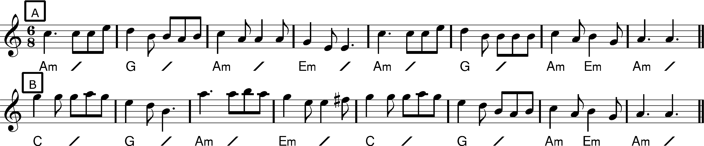

Set of 6, in 3 pairs - conventional.
Stick with handkerchiefs.
The Distinctive Figure is all strike the ground with the tips of the sticks thrice, odds strike evens sticks held horizontally, at chest height, thrice; repeat with evens striking odds similarly, followed by a Half Hey. The sequence is then repeated in full.
According to the manuscript a variant is to dib the stick, hitting the butt on the ground and of course sliding the hand up the stick to do so, but another source is very specific about the use of the word 'tap' not 'knock' as in other dances.
The A music is played for the Once to Youself and all Common Figures. The B music is played for the Distinctive Figure.
